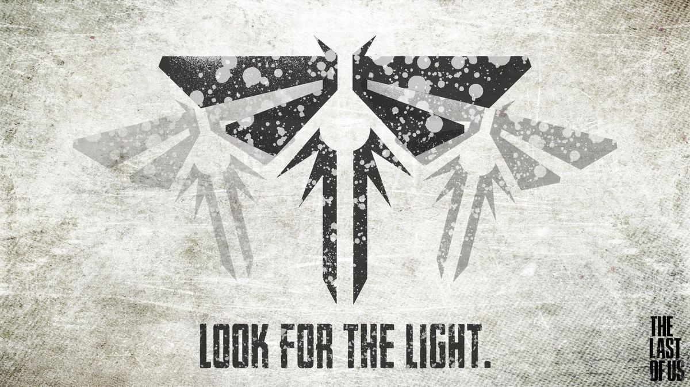
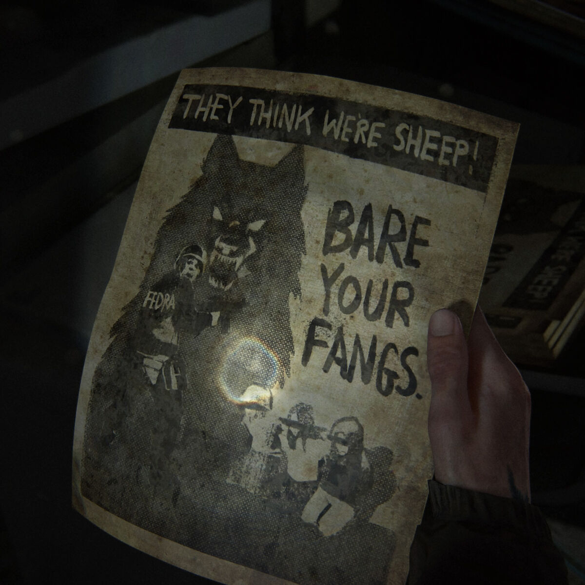
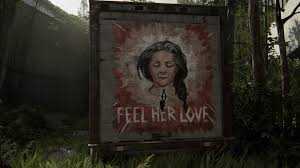
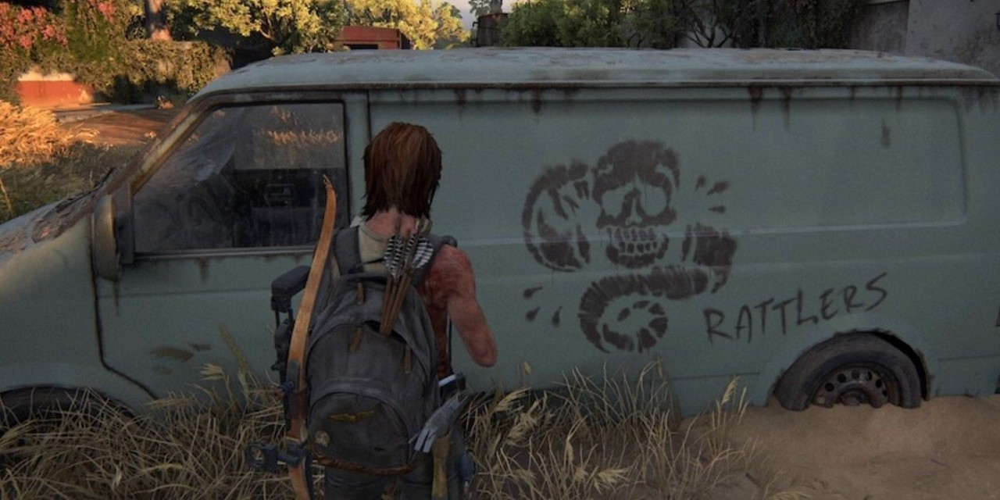
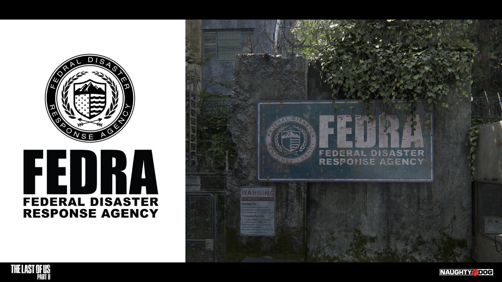
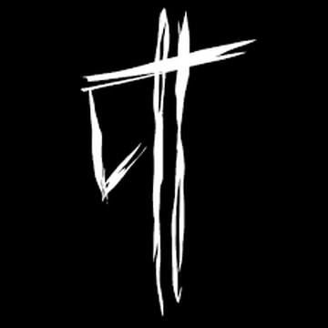

Организация была создана спустя некоторое время после вспышки кордицепсной церебральной инфекции (КЦИ) в ответ на законы военного положения, принятые в карантинных зонах по всей стране. Некоторые события из истории «Цикад»: Организация получила общественную поддержку, когда военными были казнены, по крайней мере, шесть её участников. «Цикадам» удалось провести полный переворот в некоторых карантинных зонах в таких городах, как Питтсбург, однако добившись не совсем ожидаемых результатов. После событий первой части игры организация распалась, так как потеряла надежду на создание вакцины после смерти лидера Марлин и доктора, который планировал оперировать Элли. Структура: Командный центр группировки располагался в больнице Святой Марии в Солт-Лейк-Сити. К концу игры группировка была структурирована, имела всё необходимое, в том числе медицинское оборудование, большая часть бойцов была хорошо экипирована. Деятельность: Борьба против военного режима FEDRA. «Цикады» считают FEDRA тиранами. Поиски вакцины от кордицепса, ради чего группировка готова идти на крайние меры. Расшатывание обстановки в карантинных зонах — «Цикады» вносят разлад между жителями и солдатами. Некоторые методы деятельности: террористические акты в карантинных зонах, подстрекательства, дезинформация, саботажи конвоев с провизией. Роль в сюжете: В сюжете игры «Цикады» — один из ключевых элементов, который пытается поднять население карантинных зон на восстания против военных. Например, «Цикады» нанимают контрабандиста Джоэла, чтобы он сопроводил девочку Элли, у которой иммунитет к вирусу, к условной точке — девочка нужна «Цикадам» для синтезирования вакцины. В сериале «Одни из нас» «Цикады» — радикальная повстанческая община, которая ведёт с военными ожесточённые битвы во всех частях страны. Лидер «Цикад» — Марлин, именно она просит Джоэла переправить Элли к повстанческой базе, где у девочки с иммунитетом должны взять кровь для создания вакцины против грибковой инфекции.

неофициально именуемый Волками, является воинствующей военизированной организацией и главной антагонистической фракцией. Представляет собой бывших жителей Сиэтла, а также присоединившихся к ним выживших. После того, как они свергли Федеральное агентство по ликвидации последствий стихийных бедствий (ФЕДРА) в Сиэтле, они начали войну с Серафитами за контроль над остальной частью города. ㅤВОФ усилила свою политику до смертной казни, в частности убив Софию Легасову в отместку за то, что она испортила многочисленные баннеры ВОФ в Хиллкресте. Их жестокость привела к короткой партизанской войне против сообщества Хиллкрест, в основном против их лидера (и отца Софии) Бориса Легасова. Несмотря на то, что Борис успешно убил множество солдат ВОФ, страх перед дальнейшим возмездием ВОФ заставил сообщество Хиллкрест предать Бориса, раскрыв свое намерение покинуть Хиллкрест и присоединиться к ВОФ, оставив его сражаться в одиночку. Однако Борис продолжал свои атаки, разбомбив патруль ВОФ и заманивая жителей своего сообщества в ловушки в районах, зараженных спорами . Борис в конце концов превратился в сталкера после того, как его укусил инфицированный, а оставшиеся жители присоединились к ВОФ, положив конец партизанской войне. ㅤФронт освобождения Вашингтона - опытные бойцы и обладают большей частью старых машин и снаряжения вооруженных сил. Они вооружены полуавтоматическими винтовками, военными пистолетами, самодельными бомбами, охотничьими ружьями, 9-миллиметровыми пистолетами и револьверами. Солдаты ВОФ также изображены с штурмовыми винтовками на своих фресках. Их сила такова, что многие, кто вторгался на их территорию, были убиты за эти годы, и в настоящее время они контролируют больше территории, чем Серафиты. Их общая численность исчисляется тысячами, поскольку они собрали большинство выживших мирных жителей Сиэтла и доставили их на стадион SoundView.

это религиозная община, которая верит, что пандемия была вызвана грехами. Ее представители стремятся «перезапустить мир», вернуть его к лучшим временам. У Серафитов не так много оружия, как у ВОФ, однако они отличаются скрытностью и могут использовать преимущества окружения. Чтобы сделать такую тактику эффективной, они ездят верхом и сосредотачиваются на повреждении грузовиков ВОФ, чтобы помешать им избежать атак. Помимо этого, их стиль общения отличается от других фракций — в бою они передают информацию свистом. ㅤСерафиты преимущественно жили в южной части острова, той, что обращена к пристани для яхт в Сиэтле. Таким образом, их город Хейвен был основан именно здесь. Серафиты, живущие в северном секторе острова, как правило, были фермерами, на территории располагались посевные поля и лесозаготовительные лагеря. Небольшие деревни также были разбросаны по всему острову. Однако в ист-сайде отсутствовало значительное присутствие Серафитов, что позволяло отдельным людям проникать на остров из этого района. Несмотря на это, солдаты-Серафиты патрулировали набережные и пляжи по периметру острова, что означает, что нарушителей границы обычно обнаруживали в течение дня. К 2038 году на острове проживало около тысячи Серафитов ㅤСреди Шрамов существовует иерархия, которая решает, кто получит еду. Как правило, старейшины всегда выбирали еду первыми, за ними следовали работники фермы, которые, по их мнению, собрали больше всего урожая за день. После них еду получали семьи солдат, отличившихся в патрулировании или бою, за ними следовали учителя философии Пророка. Те, кто впоследствии зарабатывал еду, определялись Серафитом, лично раздававшим еду. ㅤРелигия Серафитов, основанная на учении пророка, занимает центральное место в их обществе и образе жизни. К пророку относятся как к мессии, по ее образу и подобию сделано множество картин и резьбы по дереву. Книга с ее учениями функционирует как религиозный текст, тексты пророка пропагандировали Серафитов, живущих в согласии с природой и оторванных от цивилизованного мира, верящих, что прогресс человечества стал причиной их гибели. Участники регулярно цитируют ее учения, иногда в качестве утешения в трудных ситуациях. Молитвы и церковные собрания обязательны в сообществе. В соответствии с их духовным мировоззрением перебежчиков называют "отступниками", кордицепсную инфекцию - "порчей", а инфицированных называют "демонами". ㅤПравила и традиции серафитов строги. Старейшины возглавляют группу и распределяют между участниками их роли в сообществе: одни становятся солдатами, другие вступают в браки по предварительной договоренности. Перед тем, как завести детей, обрученные должны получить разрешение Старейшин. Последствия нарушения традиций суровы и потенциально караются смертью. Иногда родителей считают ответственными за грехи своих детей. ㅤСерафиты печально известны своей жестокостью, часто практикуя ритуальные жертвоприношения на врагах. Они подвешивают свои жертвы за шею и потрошат их, полагая, что в них "гнездится грех". После этого они все вместе скандируют "теперь они свободны" - молитву в попытке искупить "грехи" убитой жертвы. Фраза "подрезать им крылья" также имеет особое значение "ломать им руки". Все участники имеют определенные общие черты, наиболее примечательной из которых является их улыбка Глазго. Эти шрамы имеют религиозное значение, заявленное пророком как признание врожденного несовершенства человечества. ㅤМужчины и женщины носят одинаковую одежду: темные брюки, черную обувь, белые майки и кожаные плащи с капюшоном. Они также носят пончо с капюшонами, чтобы защититься от постоянных дождей, которые идут в Сиэтле. Единственная разница во внешности мужчин и женщин - это их прически: у всех мужчин бритые головы без лица, в то время как все женщины заплетают волосы в косички.

хорошо вооруженная группа враждебно настроенных выживших, разбившая лагерь в Санта-Барбаре, Калифорния . Они также оккупируют и патрулируют пригороды и лесные массивы. Их оперативной базой является бывший курорт на берегу океана, известный как Гасиенда Поланко , который Гремучники превратили в крепость и трудовой лагерь для рабов. ㅤГруппа устраивает засаду на неосторожных путешественников и забирает их припасы для собственных нужд. По всему городу расставлены ловушки для ловли как зараженных , так и людей «бездомных»: первых приковывают цепями и используют в качестве сторожевых собак, а вторых отправляют в рабство. Захват других выживших для использования в качестве рабов демонстрирует, что у Гремучих есть долгосрочный метод обеспечения себе стабильных запасов продовольствия, аналогичный методу сообщества Джексона , но с гораздо более жестокими методами достижения этой цели. Тех, кто сопротивляется порабощению, отправляют к «столбам», деревянным балкам, установленным на пляже, где их подвешивают и оставляют умирать от воздействия стихии. Те, кому удалось сбежать, питали к ним глубокую ненависть, а некоторые даже планировали собрать группу для нападения на купол Гремучего. ㅤГремучники по своей природе садистские: некоторые намеренно заражают рабов и сковывают их цепями для развлечения. Гремучие обращаются со своими жертвами с такой жестокостью, что некоторые предпочитают умереть при попытке побега. Тех, кто сбегает, называют «беглецами», которых Гремучие преследуют, чтобы вернуть. Они намеренно наносят вред рабам таким образом, что ранят их, но не убивают. Несмотря на это, некоторые по-прежнему были готовы присоединиться к группе, поскольку это обеспечивало им защиту их семьи. ㅤУчитывая судьбу, ожидающую пленных, некоторые считают самоубийство лучшей альтернативой. Элли становится свидетелем того, как сбежавший выстрелил себе в голову из украденного пистолета, когда его загнал в угол патруль Гремучих, и в этом районе можно найти многочисленные записки, написанные жителями, которые либо сбежали, либо покончили с собой, чтобы не попасть в плен. Таким образом, они являются одной из немногих групп в игре, которым не хватает морали и которые известны своим злодейским характером. ㅤГремучие люди представляют собой самую сильную группу. Использование ими бронежилетов , автоматических винтовок, винтовок с продольно-скользящим затвором, пистолетов , дробовиков, коктейлей Молотова и большого количества делает их трудной группой для подавления. Кроме того, Гремучники — опытные бойцы ближнего боя и организаторы засад.

просторечии известное как вооруженные силы или армия. После первоначальной вспышки инфекции головного мозга кордицепса ФЕДРА взяла под свой контроль правительство и вооруженные силы США, чтобы создать карантинные зоны (КЗ). В ходе этого процесса они объединились друг с другом, ввели военное положение и распустили другие государственные органы. В КЗ солдаты не позволяли гражданам покидать город, подвергали их принудительному труду, а когда запасы были низкими, ограничивали основные продовольственные пайки. Они часто казнили диссидентов и преступников или изгоняли их из КЗ. Фронт освобождения Вашингтона сравнил солдат ФЕДРА с фашистами. ㅤК 2033 году ФЕДРА будет иметь власть лишь над небольшим количеством укреплённых городов, в первую очередь над Бостоном, поскольку большинство из них были либо разрушены, заброшены, либо захвачены повстанцами. ФЕДРА — один из последних остатков правительства США, существовавшего до вспышки, наряду с Министерством обороны и Центром по контролю заболеваний. ㅤСолдаты ФЕДРА используют штурмовые винтовки с установленными фонариками, носят противогазы и бронежилеты, но явно не имеют достаточно запасных частей для каждого солдата. Таким образом, многие солдаты остаются без адекватной защиты и/или вынуждены использовать 9-миллиметровые пистолеты в качестве основного оружия. Некоторые солдаты даже используют револьверы. Они также используют дымовые гранаты, когда сталкиваются с ополчением Цикад. ㅤВ The Last of Us встречаются три типа солдат ФЕДРА. Некоторые солдаты бронированы и часто владеют штурмовыми винтовками, а не пистолетами. Они патрулируют крыши зданий и охраняют контрольно-пропускные пункты, а также являются основными войсками, которые проводят операции за пределами безопасной стены, например, патрулирование или доставку снабжения. Похоже, это «завсегдатаи» армии. Другие, небронированные войска, как видно, носят только синюю форму и полевые фуражки и имеют при себе больше пистолетов, чем штурмовых винтовок. Этих легко экипированных солдат чаще всего можно встретить внутри Бостонской стены, поэтому можно предположить, что это новобранцы или какая-то форма сил обороны города. Хотя их работа, похоже, больше сосредоточена на охране правопорядка, чем на боевых действиях, в некоторых ситуациях они встречаются в тех же отрядах, что и более тяжелые войска. ㅤТакже всего один раз можно увидеть еще один тип солдат, с которыми нельзя сражаться. Они вооружены автоматами и носят костюмы HAZMAT, противогазы и кислородные баллоны. Они имеют дело с окружающей средой, зараженной спорами, например, с заброшенным жилым домом, где в начале игры прячутся мирные жители. Их оборудование, по-видимому, обеспечивает улучшенную защиту от спор по сравнению с обычным респиратором; их кислородные баллоны позволяют предположить, что они могут действовать в зонах, зараженных спорами, в течение более длительных периодов времени, чем другие войска. ㅤВ вооруженных силах также были медицинские бригады. Например, отряд солдат из Денверской КЗ носил зеленую форму, похожую на небронированную солдат в Бостоне, с примечательным отличием: на правой руке у них была повязка Красного Креста. У них не было бронежилетов, но они обычно имели с собой хирургические принадлежности.

опытные выжившие. Годы жизни в разрушенной карантинной зоне Питтсбурга повысили их возможности выживания. Несмотря на неопрятный внешний вид и очевидную некомпетентность в обращении с огнестрельным оружием, большинство из них физически находятся на высоком уровне. ㅤПосле многих лет жизни в репрессивной Зоне с частой нехваткой продовольствия жители Питтсбурга постепенно стали нетерпеливыми по отношению к ФЕДРА, обвиняя их в коррумпированных лжецах, когда у них заканчивались пайки или они просто не раздавали еду регулярно. ㅤБунтующие граждане не хотели находиться под контролем ФЕДРА и подчиняться приказам Цикад. Таким образом, вскоре они убили и агитаторов Цикад. Позже они нашли и убили солдат, скрывавшихся в городской гостинице, и захватили работающий Хамви у бегущего военного гарнизона, а это означает, что город теперь полностью находился под их контролем. ㅤТеперь горожане имели полный контроль над городом. Несмотря на намерения создать лучшее правительство, чем ФЕДРА, их планы так и не были реализованы, поскольку все все еще отчаянно нуждались в припасах. В одном случае пара подростков убила семью, проезжавшую через Зону, но, когда их предстали перед судом, лидер похвалил их, заявив, что они собрали еду и припасы, и приказал всем по очереди охотиться стаями на туристов. Два человека высказались, но были жестоко убиты на глазах у всех. В какой-то момент после этого они привязали труп к капоту Хамви и написали на передней части табличку «БЕГИТЕ», что отражает их садистский характер. ㅤЖивущие в зоне карантина и страдающие от нехватки припасов и пайков, охотники в основном собирают и изготавливают снаряжение самостоятельно. Большинство из них оснащены базовым вооружением, включая холодное оружие, 9-мм пистолеты , револьверы , дробовики , охотничьи винтовки и бутылки с зажигательной смесью . Некоторые охотники использовали бронежилеты и противогазы , найденные у мертвых военнослужащих, чтобы лучше защитить себя от пуль. Охотники не используют штурмовые винтовки , которые можно было найти, что позволяет предположить, что к моменту прибытия Джоэла у них закончились боеприпасы. Как видно из их разговоров, восстание серьезно истощило как их численность, так и имеющиеся запасы. Таким образом, они используют больше ручного оружия, такого как 2х4 , трубы и бейсбольные биты . Они также хранят в своих гаражах дымовые гранаты , но не показано, как они их используют. ㅤС точки зрения того, как они действуют против других организованных группировок, они больше всего напоминают бандитов . Хотя охотники не так закалены, как эти выжившие, поскольку им не знакома жизнь за пределами Зоны, они обладают превосходящей численностью и снаряжением. Из-за указанной неопытности и отсутствия военной подготовки большинство охотников могут быть перехитриты и побеждены упомянутыми закаленными выжившими, особенно Генри и Джоэлом, несмотря на их численное превосходство. Однако во многих случаях большая численность охотников по-прежнему представляет собой значительную угрозу, позволяя им сокрушить нескольких одиноких выживших. Победа охотников над Цикадами и военными, похоже, также была основана на численном превосходстве, поскольку большинство из них имеют только базовое вооружение. ㅤЧто касается Зараженных, то охотники, судя по всему, сдерживают присутствие Зараженных в городе путем регулярных проверок многочисленных зданий, при этом некоторые утверждают, что присутствие Зараженных не ощущалось уже несколько недель. Однако некоторые зараженные все еще бродят по городу, особенно в подвалах отелей и канализации. За те несколько мгновений, когда они столкнулись с Зараженным напрямую, охотники преуспели: двоим из них удалось убить кликера, но только застигнув его врасплох, а снайпер смог убить нескольких кликеров на расстоянии. Тем не менее, их успех не всегда был таким последовательным, как у других групп, таких как каннибалы , поскольку другие охотники в страхе бежали от группы Заражённых, пытаясь проникнуть в город Линкольн.